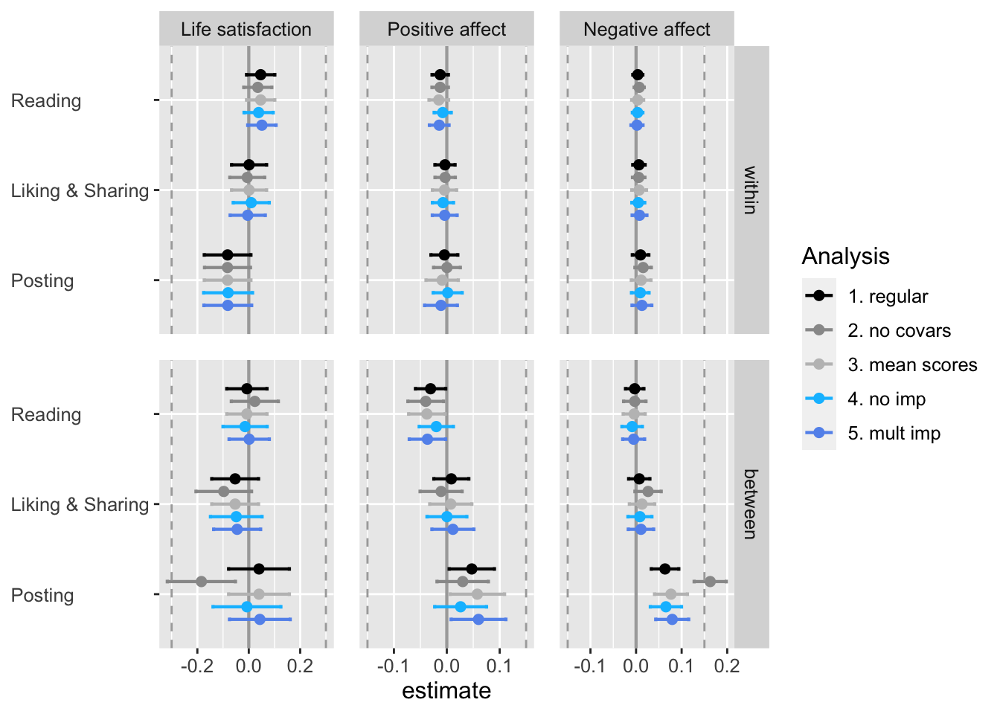
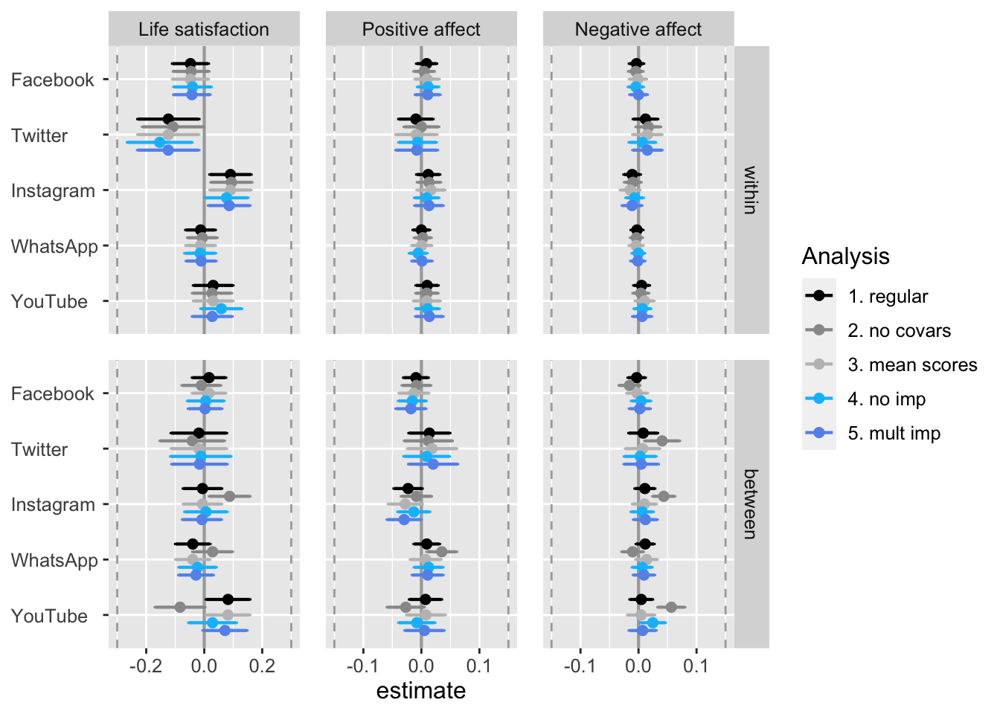

Load packages.
# install packages
# devtools::install_github("https://github.com/tdienlin/td@v.0.0.2.5")
# define packages
packages <- c("broom.mixed", "brms", "devtools", "GGally", "ggplot2",
"gridExtra", "kableExtra", "knitr", "lavaan", "lme4",
"magrittr", "mice", "mvnormalTest",
"PerFit", "psych", "quanteda.textstats", "semTools", "tidyverse")
# load packages
lapply(c(packages, "td"), library, character.only = TRUE)
# load workspace
load("data/workspace_1.RData")Instead of using factor scores, in what follows I report the results with mean scores of affect. Note that the results for life satisfaction were the same, as it was measured with a single item.
model_aff_pos_lmer_m <- lmerTest::lmer(aff_pos_m ~
(1 | id) + (1 | wave) +
soc_med_read_w + soc_med_like_share_w + soc_med_post_w +
soc_med_fb_w + soc_med_ig_w + soc_med_wa_w + soc_med_yt_w + soc_med_tw_w +
soc_med_read_b + soc_med_like_share_b + soc_med_post_b +
soc_med_fb_b + soc_med_ig_b + soc_med_wa_b + soc_med_yt_b + soc_med_tw_b +
age + male + born_aus + born_aus_prnts + edu_fac + employment_fac + health_b +
res_vienna + acc_bal + acc_gar + home_sqm +
med_txt_kro_b + med_txt_sta_b + med_txt_pre_b + med_txt_oes_b + med_txt_kur_b + med_txt_slz_b + med_txt_son_b +
med_vid_orf_b + med_vid_pri_b +
risk_prop_b + loc_cntrl_int_m_b +
act_wrk_w + act_spo_w + act_frn_w + act_sho_w + act_pet_w +
act_wrk_b + act_spo_b + act_frn_b + act_sho_b + act_pet_b +
sat_dem_w + sat_dem_b
, data = d_long_imp)
summary(model_aff_pos_lmer_m)## Linear mixed model fit by REML. t-tests use Satterthwaite's method ['lmerModLmerTest']
## Formula: aff_pos_m ~ (1 | id) + (1 | wave) + soc_med_read_w + soc_med_like_share_w + soc_med_post_w + soc_med_fb_w + soc_med_ig_w + soc_med_wa_w +
## soc_med_yt_w + soc_med_tw_w + soc_med_read_b + soc_med_like_share_b + soc_med_post_b + soc_med_fb_b + soc_med_ig_b + soc_med_wa_b +
## soc_med_yt_b + soc_med_tw_b + age + male + born_aus + born_aus_prnts + edu_fac + employment_fac + health_b + res_vienna + acc_bal +
## acc_gar + home_sqm + med_txt_kro_b + med_txt_sta_b + med_txt_pre_b + med_txt_oes_b + med_txt_kur_b + med_txt_slz_b + med_txt_son_b +
## med_vid_orf_b + med_vid_pri_b + risk_prop_b + loc_cntrl_int_m_b + act_wrk_w + act_spo_w + act_frn_w + act_sho_w + act_pet_w +
## act_wrk_b + act_spo_b + act_frn_b + act_sho_b + act_pet_b + sat_dem_w + sat_dem_b
## Data: d_long_imp
##
## REML criterion at convergence: 17621
##
## Scaled residuals:
## Min 1Q Median 3Q Max
## -4.698 -0.541 -0.012 0.559 4.922
##
## Random effects:
## Groups Name Variance Std.Dev.
## id (Intercept) 0.37922 0.6158
## wave (Intercept) 0.00355 0.0596
## Residual 0.36413 0.6034
## Number of obs: 7545, groups: id, 2750; wave, 21
##
## Fixed effects:
## Estimate Std. Error df t value Pr(>|t|)
## (Intercept) -1.420339 0.203109 2744.775027 -6.99 0.0000000000034 ***
## soc_med_read_w -0.015135 0.009484 5004.643427 -1.60 0.11058
## soc_med_like_share_w -0.004320 0.011712 5003.039861 -0.37 0.71228
## soc_med_post_w -0.008780 0.015611 5016.815188 -0.56 0.57384
## soc_med_fb_w 0.009831 0.010666 5013.582738 0.92 0.35672
## soc_med_ig_w 0.016437 0.012231 5028.416463 1.34 0.17906
## soc_med_wa_w 0.000464 0.008781 5019.644518 0.05 0.95787
## soc_med_yt_w 0.009408 0.011705 5004.636588 0.80 0.42157
## soc_med_tw_w -0.008645 0.018174 5050.410048 -0.48 0.63430
## soc_med_read_b -0.037684 0.017594 2968.831766 -2.14 0.03229 *
## soc_med_like_share_b 0.007488 0.020336 3067.725032 0.37 0.71274
## soc_med_post_b 0.057683 0.026316 3120.881491 2.19 0.02845 *
## soc_med_fb_b -0.012974 0.013029 2873.299897 -1.00 0.31942
## soc_med_ig_b -0.027823 0.014930 2936.246077 -1.86 0.06249 .
## soc_med_wa_b 0.007310 0.013468 2801.797586 0.54 0.58733
## soc_med_yt_b 0.007868 0.017029 2873.460030 0.46 0.64411
## soc_med_tw_b 0.018375 0.021660 2824.703357 0.85 0.39630
## age 0.002854 0.001604 2836.943080 1.78 0.07522 .
## male 0.154875 0.032007 2703.989169 4.84 0.0000013792521 ***
## born_aus -0.017186 0.057112 2887.040350 -0.30 0.76349
## born_aus_prnts -0.027299 0.019384 2756.995694 -1.41 0.15915
## edu_facBachelor 0.070171 0.082501 2749.139134 0.85 0.39509
## edu_facHigh school 0.035020 0.061366 2851.870860 0.57 0.56826
## edu_facMaster -0.059983 0.069756 2650.432168 -0.86 0.38992
## edu_facMiddle school 0.033963 0.061119 2908.879084 0.56 0.57847
## edu_facNo degree 0.324516 0.182698 2474.225629 1.78 0.07582 .
## edu_facPhD -0.006568 0.149434 2492.739771 -0.04 0.96495
## edu_facState college 0.197567 0.098911 2799.736419 2.00 0.04588 *
## edu_facTechnical school 0.041731 0.047649 2847.952449 0.88 0.38122
## edu_facVocational school -0.001613 0.061370 2667.241009 -0.03 0.97903
## employment_facIncapacitated -0.127369 0.164461 3357.097858 -0.77 0.43871
## employment_facIndustrie -0.285868 0.111124 2719.277147 -2.57 0.01015 *
## employment_facParental Leave -0.095749 0.144807 2834.073780 -0.66 0.50853
## employment_facPublic service -0.273208 0.114508 2713.274320 -2.39 0.01710 *
## employment_facRetired -0.132565 0.112977 2658.186732 -1.17 0.24075
## employment_facSelf-employed -0.343566 0.123674 2693.406309 -2.78 0.00551 **
## employment_facStudent -0.267524 0.120181 2811.836648 -2.23 0.02609 *
## employment_facUnemployed -0.215052 0.124031 2690.311019 -1.73 0.08306 .
## health_b 0.299181 0.024778 2942.890994 12.07 < 0.0000000000000002 ***
## res_vienna -0.024087 0.038959 2683.541721 -0.62 0.53646
## acc_bal -0.049630 0.031259 2669.003000 -1.59 0.11247
## acc_gar -0.021689 0.037537 2697.200717 -0.58 0.56345
## home_sqm 0.022525 0.007467 2857.313651 3.02 0.00258 **
## med_txt_kro_b -0.012463 0.013072 2606.876465 -0.95 0.34047
## med_txt_sta_b -0.024882 0.016616 2766.255088 -1.50 0.13438
## med_txt_pre_b 0.005026 0.022001 2841.917877 0.23 0.81931
## med_txt_oes_b -0.002163 0.016140 2720.334850 -0.13 0.89343
## med_txt_kur_b 0.035786 0.018135 2674.046119 1.97 0.04857 *
## med_txt_slz_b 0.036051 0.022636 2796.011427 1.59 0.11136
## med_txt_son_b 0.036798 0.012814 2717.539160 2.87 0.00412 **
## med_vid_orf_b -0.029104 0.014394 2757.485955 -2.02 0.04328 *
## med_vid_pri_b 0.011713 0.014337 2697.050034 0.82 0.41402
## risk_prop_b -0.003421 0.009350 2932.064322 -0.37 0.71452
## loc_cntrl_int_m_b 0.791763 0.040014 2874.855827 19.79 < 0.0000000000000002 ***
## act_wrk_w 0.014695 0.009350 5653.283576 1.57 0.11609
## act_spo_w 0.078485 0.011479 5805.316284 6.84 0.0000000000089 ***
## act_frn_w 0.037490 0.014415 3663.559798 2.60 0.00934 **
## act_sho_w 0.063598 0.014363 5814.912020 4.43 0.0000096960931 ***
## act_pet_w 0.031485 0.014009 5957.299893 2.25 0.02465 *
## act_wrk_b 0.039490 0.015056 2927.949487 2.62 0.00876 **
## act_spo_b 0.168063 0.017547 2791.244277 9.58 < 0.0000000000000002 ***
## act_frn_b 0.112962 0.027471 3056.131769 4.11 0.0000402470149 ***
## act_sho_b 0.030528 0.025846 2833.832201 1.18 0.23765
## act_pet_b 0.022649 0.011769 2620.039345 1.92 0.05441 .
## sat_dem_w 0.043579 0.012119 4833.264312 3.60 0.00033 ***
## sat_dem_b 0.050877 0.016788 2690.644345 3.03 0.00246 **
## ---
## Signif. codes: 0 '***' 0.001 '**' 0.01 '*' 0.05 '.' 0.1 ' ' 1The results differed only slightly, and all inferences remained the same.
model_aff_neg_lmer_m <- lmerTest::lmer(aff_neg_m ~
(1 | id) + (1 | wave) +
soc_med_read_w + soc_med_like_share_w + soc_med_post_w +
soc_med_fb_w + soc_med_ig_w + soc_med_wa_w + soc_med_yt_w + soc_med_tw_w +
soc_med_read_b + soc_med_like_share_b + soc_med_post_b +
soc_med_fb_b + soc_med_ig_b + soc_med_wa_b + soc_med_yt_b + soc_med_tw_b +
age + male + born_aus + born_aus_prnts + edu_fac + employment_fac + health_b +
res_vienna + acc_bal + acc_gar + home_sqm +
med_txt_kro_b + med_txt_sta_b + med_txt_pre_b + med_txt_oes_b + med_txt_kur_b + med_txt_slz_b + med_txt_son_b +
med_vid_orf_b + med_vid_pri_b +
risk_prop_b + loc_cntrl_int_m_b +
act_wrk_w + act_spo_w + act_frn_w + act_sho_w + act_pet_w +
act_wrk_b + act_spo_b + act_frn_b + act_sho_b + act_pet_b +
sat_dem_w + sat_dem_b
, data = d_long_imp)
summary(model_aff_neg_lmer_m)## Linear mixed model fit by REML. t-tests use Satterthwaite's method ['lmerModLmerTest']
## Formula: aff_neg_m ~ (1 | id) + (1 | wave) + soc_med_read_w + soc_med_like_share_w + soc_med_post_w + soc_med_fb_w + soc_med_ig_w + soc_med_wa_w +
## soc_med_yt_w + soc_med_tw_w + soc_med_read_b + soc_med_like_share_b + soc_med_post_b + soc_med_fb_b + soc_med_ig_b + soc_med_wa_b +
## soc_med_yt_b + soc_med_tw_b + age + male + born_aus + born_aus_prnts + edu_fac + employment_fac + health_b + res_vienna + acc_bal +
## acc_gar + home_sqm + med_txt_kro_b + med_txt_sta_b + med_txt_pre_b + med_txt_oes_b + med_txt_kur_b + med_txt_slz_b + med_txt_son_b +
## med_vid_orf_b + med_vid_pri_b + risk_prop_b + loc_cntrl_int_m_b + act_wrk_w + act_spo_w + act_frn_w + act_sho_w + act_pet_w +
## act_wrk_b + act_spo_b + act_frn_b + act_sho_b + act_pet_b + sat_dem_w + sat_dem_b
## Data: d_long_imp
##
## REML criterion at convergence: 12396
##
## Scaled residuals:
## Min 1Q Median 3Q Max
## -3.915 -0.449 -0.088 0.332 5.756
##
## Random effects:
## Groups Name Variance Std.Dev.
## id (Intercept) 0.1836 0.429
## wave (Intercept) 0.0116 0.107
## Residual 0.1821 0.427
## Number of obs: 7545, groups: id, 2750; wave, 21
##
## Fixed effects:
## Estimate Std. Error df t value Pr(>|t|)
## (Intercept) 4.750664 0.143947 2134.167620 33.00 < 0.0000000000000002 ***
## soc_med_read_w 0.003512 0.006717 4923.739432 0.52 0.60107
## soc_med_like_share_w 0.006739 0.008285 4881.335775 0.81 0.41604
## soc_med_post_w 0.011117 0.011040 4897.854011 1.01 0.31399
## soc_med_fb_w -0.001151 0.007542 4891.661879 -0.15 0.87866
## soc_med_ig_w -0.014448 0.008649 4905.522224 -1.67 0.09490 .
## soc_med_wa_w -0.004188 0.006210 4898.626226 -0.67 0.50016
## soc_med_yt_w 0.010476 0.008280 4881.559257 1.27 0.20584
## soc_med_tw_w 0.015256 0.012854 4935.588190 1.19 0.23530
## soc_med_read_b -0.004159 0.012325 2840.176040 -0.34 0.73581
## soc_med_like_share_b 0.013127 0.014232 2939.942665 0.92 0.35642
## soc_med_post_b 0.076603 0.018432 2994.761531 4.16 0.0000333124893938 ***
## soc_med_fb_b -0.002299 0.009120 2747.104015 -0.25 0.80102
## soc_med_ig_b 0.010042 0.010455 2810.719875 0.96 0.33690
## soc_med_wa_b 0.013932 0.009422 2672.656797 1.48 0.13935
## soc_med_yt_b 0.004399 0.011916 2745.664220 0.37 0.71202
## soc_med_tw_b 0.007098 0.015151 2695.561455 0.47 0.63948
## age -0.008772 0.001123 2711.744038 -7.81 0.0000000000000081 ***
## male -0.114086 0.022390 2574.099942 -5.10 0.0000003732894639 ***
## born_aus -0.100052 0.039962 2753.648186 -2.50 0.01235 *
## born_aus_prnts -0.017049 0.013564 2626.549573 -1.26 0.20889
## edu_facBachelor -0.055611 0.057724 2621.850453 -0.96 0.33544
## edu_facHigh school 0.035456 0.042953 2721.788539 0.83 0.40917
## edu_facMaster 0.019348 0.048782 2522.394772 0.40 0.69168
## edu_facMiddle school 0.027648 0.042806 2784.428892 0.65 0.51841
## edu_facNo degree 0.111814 0.127753 2347.388243 0.88 0.38154
## edu_facPhD 0.099835 0.104460 2366.553683 0.96 0.33931
## edu_facState college -0.102281 0.069251 2669.114822 -1.48 0.13980
## edu_facTechnical school -0.045355 0.033371 2721.727988 -1.36 0.17422
## edu_facVocational school -0.000391 0.042934 2540.772039 -0.01 0.99273
## employment_facIncapacitated -0.010804 0.115182 3214.428521 -0.09 0.92527
## employment_facIndustrie 0.130366 0.077750 2590.678531 1.68 0.09372 .
## employment_facParental Leave 0.132875 0.101337 2699.695809 1.31 0.18989
## employment_facPublic service 0.161650 0.080112 2585.017722 2.02 0.04372 *
## employment_facRetired 0.204621 0.079006 2528.133768 2.59 0.00965 **
## employment_facSelf-employed 0.233284 0.086508 2564.876449 2.70 0.00705 **
## employment_facStudent 0.161637 0.084092 2682.732533 1.92 0.05469 .
## employment_facUnemployed 0.215455 0.086763 2561.638722 2.48 0.01308 *
## health_b -0.278331 0.017360 2812.403784 -16.03 < 0.0000000000000002 ***
## res_vienna -0.059307 0.027291 2558.882600 -2.17 0.02986 *
## acc_bal -0.039101 0.021873 2541.588745 -1.79 0.07395 .
## acc_gar -0.055447 0.026263 2566.853768 -2.11 0.03485 *
## home_sqm -0.018965 0.005226 2724.692754 -3.63 0.00029 ***
## med_txt_kro_b -0.009589 0.009142 2480.564214 -1.05 0.29431
## med_txt_sta_b 0.032437 0.011627 2637.876434 2.79 0.00531 **
## med_txt_pre_b 0.004734 0.015393 2711.350049 0.31 0.75845
## med_txt_oes_b 0.005228 0.011290 2592.620307 0.46 0.64336
## med_txt_kur_b -0.002027 0.012688 2545.838622 -0.16 0.87307
## med_txt_slz_b 0.004384 0.015839 2668.403241 0.28 0.78195
## med_txt_son_b -0.010946 0.008961 2588.111284 -1.22 0.22201
## med_vid_orf_b 0.026098 0.010073 2629.966156 2.59 0.00963 **
## med_vid_pri_b -0.001811 0.010029 2568.308655 -0.18 0.85671
## risk_prop_b -0.018575 0.006545 2803.282212 -2.84 0.00457 **
## loc_cntrl_int_m_b -0.540496 0.027998 2744.480790 -19.30 < 0.0000000000000002 ***
## act_wrk_w -0.001900 0.006626 5708.151109 -0.29 0.77426
## act_spo_w 0.013069 0.008119 5732.619145 1.61 0.10754
## act_frn_w 0.027989 0.010319 5728.525948 2.71 0.00670 **
## act_sho_w 0.006569 0.010157 5739.284989 0.65 0.51783
## act_pet_w 0.065954 0.009900 5886.485418 6.66 0.0000000000294937 ***
## act_wrk_b 0.006331 0.010554 2807.237129 0.60 0.54862
## act_spo_b 0.026564 0.012275 2661.985202 2.16 0.03054 *
## act_frn_b 0.084892 0.019310 2984.159088 4.40 0.0000114027144866 ***
## act_sho_b 0.023144 0.018083 2705.216588 1.28 0.20070
## act_pet_b 0.014416 0.008230 2492.712361 1.75 0.07994 .
## sat_dem_w -0.036160 0.008619 5760.260552 -4.20 0.0000276712616093 ***
## sat_dem_b -0.058100 0.011742 2563.131237 -4.95 0.0000007983167637 ***
## ---
## Signif. codes: 0 '***' 0.001 '**' 0.01 '*' 0.05 '.' 0.1 ' ' 1The results differed only slightly, and all inferences remained the same.
We first need to export factor scores for variables without imputed data
model <- "
aff_pos =~ a1*aff_pos_1 + a2*aff_pos_2 + a3*aff_pos_3
"
cfa_aff_pos <- cfa(model, d_long, group = "wave", estimator = "MLM")
d_long$aff_pos_fs <- get_fs(cfa_aff_pos)
model <- "
aff_neg =~ a1*aff_neg_1 + a2*aff_neg_2 + a3*aff_neg_3 + a4*aff_neg_4 + a5*aff_neg_5 + a6*aff_neg_6
"
cfa_aff_neg <- cfa(model, d_long, group = "wave", estimator = "MLM")
d_long$aff_neg_fs <- get_fs(cfa_aff_neg)model_life_sat_lmer_noi <- lmerTest::lmer(life_sat ~
(1 | id) + (1 | wave) +
soc_med_read_w + soc_med_like_share_w + soc_med_post_w +
soc_med_fb_w + soc_med_ig_w + soc_med_wa_w + soc_med_yt_w + soc_med_tw_w +
soc_med_read_b + soc_med_like_share_b + soc_med_post_b +
soc_med_fb_b + soc_med_ig_b + soc_med_wa_b + soc_med_yt_b + soc_med_tw_b +
age + male + born_aus + born_aus_prnts + edu_fac + employment_fac + health_b +
res_vienna + acc_bal + acc_gar + home_sqm +
med_txt_kro_b + med_txt_sta_b + med_txt_pre_b + med_txt_oes_b + med_txt_kur_b + med_txt_slz_b + med_txt_son_b +
med_vid_orf_b + med_vid_pri_b +
risk_prop_b + loc_cntrl_int_m_b +
act_wrk_w + act_spo_w + act_frn_w + act_sho_w + act_pet_w +
act_wrk_b + act_spo_b + act_frn_b + act_sho_b + act_pet_b +
sat_dem_w + sat_dem_b
, data = d_long)
summary(model_life_sat_lmer_noi)## Linear mixed model fit by REML. t-tests use Satterthwaite's method ['lmerModLmerTest']
## Formula: life_sat ~ (1 | id) + (1 | wave) + soc_med_read_w + soc_med_like_share_w + soc_med_post_w + soc_med_fb_w + soc_med_ig_w + soc_med_wa_w +
## soc_med_yt_w + soc_med_tw_w + soc_med_read_b + soc_med_like_share_b + soc_med_post_b + soc_med_fb_b + soc_med_ig_b + soc_med_wa_b +
## soc_med_yt_b + soc_med_tw_b + age + male + born_aus + born_aus_prnts + edu_fac + employment_fac + health_b + res_vienna + acc_bal +
## acc_gar + home_sqm + med_txt_kro_b + med_txt_sta_b + med_txt_pre_b + med_txt_oes_b + med_txt_kur_b + med_txt_slz_b + med_txt_son_b +
## med_vid_orf_b + med_vid_pri_b + risk_prop_b + loc_cntrl_int_m_b + act_wrk_w + act_spo_w + act_frn_w + act_sho_w + act_pet_w +
## act_wrk_b + act_spo_b + act_frn_b + act_sho_b + act_pet_b + sat_dem_w + sat_dem_b
## Data: d_long
##
## REML criterion at convergence: 29235
##
## Scaled residuals:
## Min 1Q Median 3Q Max
## -4.426 -0.365 0.136 0.518 4.243
##
## Random effects:
## Groups Name Variance Std.Dev.
## id (Intercept) 1.4930 1.222
## wave (Intercept) 0.0135 0.116
## Residual 3.1138 1.765
## Number of obs: 6810, groups: id, 2446; wave, 21
##
## Fixed effects:
## Estimate Std. Error df t value Pr(>|t|)
## (Intercept) -2.51071 0.61482 2155.57944 -4.08 0.0000460 ***
## soc_med_read_w 0.03828 0.02891 4519.41534 1.32 0.18554
## soc_med_like_share_w 0.00956 0.03580 4667.08062 0.27 0.78951
## soc_med_post_w -0.08038 0.04855 4726.16954 -1.66 0.09784 .
## soc_med_fb_w -0.04051 0.03286 4707.13494 -1.23 0.21774
## soc_med_ig_w 0.07679 0.03757 4726.03036 2.04 0.04100 *
## soc_med_wa_w -0.01410 0.02697 4702.45392 -0.52 0.60107
## soc_med_yt_w 0.05883 0.03597 4683.62478 1.64 0.10194
## soc_med_tw_w -0.15357 0.05685 4789.56076 -2.70 0.00693 **
## soc_med_read_b -0.01446 0.04380 2584.74272 -0.33 0.74135
## soc_med_like_share_b -0.04865 0.05120 2669.77730 -0.95 0.34211
## soc_med_post_b -0.00712 0.06733 2819.32135 -0.11 0.91574
## soc_med_fb_b 0.00504 0.03212 2484.82200 0.16 0.87522
## soc_med_ig_b 0.00570 0.03719 2545.27684 0.15 0.87816
## soc_med_wa_b -0.02308 0.03288 2360.26812 -0.70 0.48287
## soc_med_yt_b 0.02850 0.04184 2476.92539 0.68 0.49589
## soc_med_tw_b -0.01208 0.05300 2382.76737 -0.23 0.81969
## age 0.00843 0.00392 2296.30904 2.15 0.03157 *
## male 0.16245 0.07580 2209.56339 2.14 0.03221 *
## born_aus -0.26115 0.14431 2428.67854 -1.81 0.07047 .
## born_aus_prnts -0.00168 0.04761 2258.05747 -0.04 0.97190
## edu_facMiddle school -0.69129 0.46349 2046.08561 -1.49 0.13599
## edu_facVocational school -0.62496 0.45982 2024.92885 -1.36 0.17426
## edu_facTechnical school -0.77048 0.45101 2023.30303 -1.71 0.08773 .
## edu_facHigh school -0.74779 0.46399 2049.96949 -1.61 0.10719
## edu_facApplied high school -0.73710 0.45943 2043.51212 -1.60 0.10878
## edu_facState college -0.98202 0.49867 2090.63365 -1.97 0.04905 *
## edu_facBachelor -0.42734 0.48410 2067.26523 -0.88 0.37748
## edu_facMaster -0.68408 0.46826 2036.67919 -1.46 0.14420
## edu_facPhD -0.31172 0.56822 2022.95592 -0.55 0.58334
## employment_facIndustrie 0.59702 0.18155 2293.18300 3.29 0.00102 **
## employment_facPublic service 0.66382 0.19352 2298.69000 3.43 0.00061 ***
## employment_facSelf-employed 0.32794 0.22192 2243.04266 1.48 0.13962
## employment_facRetired 0.60074 0.19558 2168.99492 3.07 0.00216 **
## employment_facHousekeeping 0.96023 0.30917 2227.64770 3.11 0.00192 **
## employment_facStudent 0.68693 0.21624 2449.90313 3.18 0.00151 **
## employment_facIncapacitated 0.91453 0.37902 2559.66865 2.41 0.01590 *
## employment_facParental Leave 1.22302 0.29776 2302.47827 4.11 0.0000414 ***
## health_b 0.69729 0.05657 2364.74643 12.33 < 0.0000000000000002 ***
## res_vienna 0.09212 0.09429 2202.71127 0.98 0.32870
## acc_bal 0.04812 0.07567 2224.58087 0.64 0.52487
## acc_gar 0.08216 0.09149 2209.08739 0.90 0.36925
## home_sqm 0.05242 0.01828 2340.40839 2.87 0.00418 **
## med_txt_kro_b 0.06672 0.03084 2191.97905 2.16 0.03061 *
## med_txt_sta_b 0.04107 0.04012 2306.25672 1.02 0.30610
## med_txt_pre_b 0.04071 0.05271 2448.87757 0.77 0.43992
## med_txt_oes_b -0.02597 0.03926 2288.25793 -0.66 0.50845
## med_txt_kur_b 0.02829 0.04353 2197.34601 0.65 0.51578
## med_txt_slz_b 0.00119 0.05608 2344.39766 0.02 0.98310
## med_txt_son_b -0.01577 0.03044 2262.91458 -0.52 0.60446
## med_vid_orf_b -0.01314 0.03472 2328.33653 -0.38 0.70522
## med_vid_pri_b 0.03082 0.03450 2265.50587 0.89 0.37173
## risk_prop_b 0.02607 0.01811 2296.76400 1.44 0.15022
## loc_cntrl_int_m_b 1.24674 0.07841 2246.41797 15.90 < 0.0000000000000002 ***
## act_wrk_w 0.08063 0.02809 5010.63416 2.87 0.00411 **
## act_spo_w 0.02403 0.03453 5730.52007 0.70 0.48647
## act_frn_w 0.03800 0.04313 1446.26720 0.88 0.37840
## act_sho_w 0.07859 0.04326 5664.02146 1.82 0.06933 .
## act_pet_w -0.05268 0.04482 5871.78783 -1.18 0.23986
## act_wrk_b 0.04303 0.03715 2429.52572 1.16 0.24685
## act_spo_b 0.08478 0.04301 2359.01876 1.97 0.04883 *
## act_frn_b 0.14628 0.06929 2640.36336 2.11 0.03487 *
## act_sho_b -0.04772 0.06417 2423.69359 -0.74 0.45717
## act_pet_b 0.02584 0.02802 2215.49777 0.92 0.35656
## sat_dem_w 0.17715 0.03653 2553.09600 4.85 0.0000013 ***
## sat_dem_b 0.37012 0.04037 2255.14438 9.17 < 0.0000000000000002 ***
## ---
## Signif. codes: 0 '***' 0.001 '**' 0.01 '*' 0.05 '.' 0.1 ' ' 1model_aff_pos_lmer_noi <- lmerTest::lmer(aff_pos_fs ~
(1 | id) + (1 | wave) +
soc_med_read_w + soc_med_like_share_w + soc_med_post_w +
soc_med_fb_w + soc_med_ig_w + soc_med_wa_w + soc_med_yt_w + soc_med_tw_w +
soc_med_read_b + soc_med_like_share_b + soc_med_post_b +
soc_med_fb_b + soc_med_ig_b + soc_med_wa_b + soc_med_yt_b + soc_med_tw_b +
age + male + born_aus + born_aus_prnts + edu_fac + employment_fac + health_b +
res_vienna + acc_bal + acc_gar + home_sqm +
med_txt_kro_b + med_txt_sta_b + med_txt_pre_b + med_txt_oes_b + med_txt_kur_b + med_txt_slz_b + med_txt_son_b +
med_vid_orf_b + med_vid_pri_b +
risk_prop_b + loc_cntrl_int_m_b +
act_wrk_w + act_spo_w + act_frn_w + act_sho_w + act_pet_w +
act_wrk_b + act_spo_b + act_frn_b + act_sho_b + act_pet_b +
sat_dem_w + sat_dem_b
, data = d_long)
summary(model_aff_pos_lmer_noi)## Linear mixed model fit by REML. t-tests use Satterthwaite's method ['lmerModLmerTest']
## Formula: aff_pos_fs ~ (1 | id) + (1 | wave) + soc_med_read_w + soc_med_like_share_w + soc_med_post_w + soc_med_fb_w + soc_med_ig_w + soc_med_wa_w +
## soc_med_yt_w + soc_med_tw_w + soc_med_read_b + soc_med_like_share_b + soc_med_post_b + soc_med_fb_b + soc_med_ig_b + soc_med_wa_b +
## soc_med_yt_b + soc_med_tw_b + age + male + born_aus + born_aus_prnts + edu_fac + employment_fac + health_b + res_vienna + acc_bal +
## acc_gar + home_sqm + med_txt_kro_b + med_txt_sta_b + med_txt_pre_b + med_txt_oes_b + med_txt_kur_b + med_txt_slz_b + med_txt_son_b +
## med_vid_orf_b + med_vid_pri_b + risk_prop_b + loc_cntrl_int_m_b + act_wrk_w + act_spo_w + act_frn_w + act_sho_w + act_pet_w +
## act_wrk_b + act_spo_b + act_frn_b + act_sho_b + act_pet_b + sat_dem_w + sat_dem_b
## Data: d_long
##
## REML criterion at convergence: 12993
##
## Scaled residuals:
## Min 1Q Median 3Q Max
## -4.763 -0.536 -0.020 0.546 3.640
##
## Random effects:
## Groups Name Variance Std.Dev.
## id (Intercept) 0.29589 0.5440
## wave (Intercept) 0.00273 0.0523
## Residual 0.23998 0.4899
## Number of obs: 6585, groups: id, 2409; wave, 21
##
## Fixed effects:
## Estimate Std. Error df t value Pr(>|t|)
## (Intercept) -0.251453 0.235466 2322.840602 -1.07 0.28568
## soc_med_read_w -0.007765 0.008273 4405.881629 -0.94 0.34798
## soc_med_like_share_w -0.007239 0.010217 4398.376663 -0.71 0.47870
## soc_med_post_w 0.001665 0.014015 4422.922246 0.12 0.90542
## soc_med_fb_w 0.011608 0.009346 4388.639077 1.24 0.21430
## soc_med_ig_w 0.009042 0.010726 4417.926222 0.84 0.39930
## soc_med_wa_w -0.005624 0.007707 4396.628465 -0.73 0.46562
## soc_med_yt_w 0.010549 0.010299 4396.126977 1.02 0.30576
## soc_med_tw_w -0.006638 0.016483 4462.858202 -0.40 0.68716
## soc_med_read_b -0.019866 0.016525 2543.290576 -1.20 0.22939
## soc_med_like_share_b 0.000221 0.019244 2598.354480 0.01 0.99086
## soc_med_post_b 0.026117 0.025011 2687.454459 1.04 0.29649
## soc_med_fb_b -0.015698 0.012156 2478.792607 -1.29 0.19668
## soc_med_ig_b -0.013138 0.014009 2504.985338 -0.94 0.34842
## soc_med_wa_b 0.012450 0.012559 2400.016679 0.99 0.32162
## soc_med_yt_b -0.007925 0.015847 2466.003453 -0.50 0.61705
## soc_med_tw_b 0.009078 0.020045 2425.618906 0.45 0.65066
## age 0.002983 0.001495 2358.836249 1.99 0.04617 *
## male 0.129437 0.029063 2307.057609 4.45 0.0000088453 ***
## born_aus -0.035881 0.055035 2435.378352 -0.65 0.51449
## born_aus_prnts -0.029380 0.018222 2323.495883 -1.61 0.10703
## edu_facMiddle school -0.216029 0.177658 2283.302625 -1.22 0.22412
## edu_facVocational school -0.248019 0.176582 2268.054139 -1.40 0.16029
## edu_facTechnical school -0.216730 0.173037 2270.659571 -1.25 0.21051
## edu_facHigh school -0.231175 0.177914 2285.081227 -1.30 0.19395
## edu_facApplied high school -0.260034 0.176162 2282.148289 -1.48 0.14005
## edu_facState college -0.127211 0.191118 2304.489755 -0.67 0.50572
## edu_facBachelor -0.180970 0.185434 2289.445887 -0.98 0.32920
## edu_facMaster -0.317628 0.179611 2275.332182 -1.77 0.07712 .
## edu_facPhD -0.178745 0.218231 2213.682766 -0.82 0.41284
## employment_facIndustrie 0.007239 0.069434 2350.671242 0.10 0.91698
## employment_facPublic service 0.027403 0.073966 2352.307982 0.37 0.71106
## employment_facSelf-employed -0.007343 0.084993 2326.965475 -0.09 0.93116
## employment_facRetired 0.137210 0.075490 2275.073418 1.82 0.06926 .
## employment_facHousekeeping 0.236707 0.120789 2284.268231 1.96 0.05016 .
## employment_facStudent -0.014668 0.082226 2443.214066 -0.18 0.85843
## employment_facIncapacitated 0.066985 0.140528 2565.044010 0.48 0.63364
## employment_facParental Leave 0.252210 0.113669 2354.902108 2.22 0.02659 *
## health_b 0.287513 0.021437 2427.973675 13.41 < 0.0000000000000002 ***
## res_vienna -0.025200 0.036206 2306.564930 -0.70 0.48648
## acc_bal -0.032255 0.029023 2310.950523 -1.11 0.26654
## acc_gar -0.003219 0.035033 2299.183581 -0.09 0.92679
## home_sqm 0.020475 0.006965 2376.277899 2.94 0.00332 **
## med_txt_kro_b -0.006776 0.011837 2301.030302 -0.57 0.56708
## med_txt_sta_b -0.014156 0.015297 2358.999342 -0.93 0.35482
## med_txt_pre_b 0.016354 0.019936 2469.560879 0.82 0.41212
## med_txt_oes_b -0.011649 0.014988 2368.055099 -0.78 0.43710
## med_txt_kur_b 0.027678 0.016680 2302.796452 1.66 0.09718 .
## med_txt_slz_b 0.023080 0.021378 2391.067901 1.08 0.28043
## med_txt_son_b 0.025612 0.011613 2335.647120 2.21 0.02752 *
## med_vid_orf_b -0.032531 0.013220 2387.913749 -2.46 0.01394 *
## med_vid_pri_b 0.018843 0.013187 2341.072898 1.43 0.15317
## risk_prop_b -0.002242 0.006918 2361.740139 -0.32 0.74590
## loc_cntrl_int_m_b 0.459008 0.029989 2325.334440 15.31 < 0.0000000000000002 ***
## act_wrk_w 0.021637 0.008230 4863.306966 2.63 0.00859 **
## act_spo_w 0.065440 0.010101 5034.723499 6.48 0.0000000001 ***
## act_frn_w 0.033281 0.012895 3220.738930 2.58 0.00990 **
## act_sho_w 0.049496 0.012746 5030.721608 3.88 0.00010 ***
## act_pet_w 0.024755 0.013389 5204.162349 1.85 0.06454 .
## act_wrk_b 0.031708 0.014109 2451.363866 2.25 0.02471 *
## act_spo_b 0.139191 0.016400 2400.510244 8.49 < 0.0000000000000002 ***
## act_frn_b 0.097353 0.025973 2642.422600 3.75 0.00018 ***
## act_sho_b 0.032657 0.024408 2451.554298 1.34 0.18104
## act_pet_b 0.013775 0.010753 2302.982895 1.28 0.20031
## sat_dem_w 0.037327 0.010778 4216.627972 3.46 0.00054 ***
## sat_dem_b 0.052760 0.015395 2346.241860 3.43 0.00062 ***
## ---
## Signif. codes: 0 '***' 0.001 '**' 0.01 '*' 0.05 '.' 0.1 ' ' 1model_aff_neg_lmer_noi <- lmerTest::lmer(aff_neg_fs ~
(1 | id) + (1 | wave) +
soc_med_read_w + soc_med_like_share_w + soc_med_post_w +
soc_med_fb_w + soc_med_ig_w + soc_med_wa_w + soc_med_yt_w + soc_med_tw_w +
soc_med_read_b + soc_med_like_share_b + soc_med_post_b +
soc_med_fb_b + soc_med_ig_b + soc_med_wa_b + soc_med_yt_b + soc_med_tw_b +
age + male + born_aus + born_aus_prnts + edu_fac + employment_fac + health_b +
res_vienna + acc_bal + acc_gar + home_sqm +
med_txt_kro_b + med_txt_sta_b + med_txt_pre_b + med_txt_oes_b + med_txt_kur_b + med_txt_slz_b + med_txt_son_b +
med_vid_orf_b + med_vid_pri_b +
risk_prop_b + loc_cntrl_int_m_b +
act_wrk_w + act_spo_w + act_frn_w + act_sho_w + act_pet_w +
act_wrk_b + act_spo_b + act_frn_b + act_sho_b + act_pet_b +
sat_dem_w + sat_dem_b
, data = d_long)
summary(model_aff_neg_lmer_noi)## Linear mixed model fit by REML. t-tests use Satterthwaite's method ['lmerModLmerTest']
## Formula: aff_neg_fs ~ (1 | id) + (1 | wave) + soc_med_read_w + soc_med_like_share_w + soc_med_post_w + soc_med_fb_w + soc_med_ig_w + soc_med_wa_w +
## soc_med_yt_w + soc_med_tw_w + soc_med_read_b + soc_med_like_share_b + soc_med_post_b + soc_med_fb_b + soc_med_ig_b + soc_med_wa_b +
## soc_med_yt_b + soc_med_tw_b + age + male + born_aus + born_aus_prnts + edu_fac + employment_fac + health_b + res_vienna + acc_bal +
## acc_gar + home_sqm + med_txt_kro_b + med_txt_sta_b + med_txt_pre_b + med_txt_oes_b + med_txt_kur_b + med_txt_slz_b + med_txt_son_b +
## med_vid_orf_b + med_vid_pri_b + risk_prop_b + loc_cntrl_int_m_b + act_wrk_w + act_spo_w + act_frn_w + act_sho_w + act_pet_w +
## act_wrk_b + act_spo_b + act_frn_b + act_sho_b + act_pet_b + sat_dem_w + sat_dem_b
## Data: d_long
##
## REML criterion at convergence: 8307
##
## Scaled residuals:
## Min 1Q Median 3Q Max
## -4.174 -0.417 -0.096 0.286 5.572
##
## Random effects:
## Groups Name Variance Std.Dev.
## id (Intercept) 0.13712 0.3703
## wave (Intercept) 0.00817 0.0904
## Residual 0.12022 0.3467
## Number of obs: 6536, groups: id, 2389; wave, 21
##
## Fixed effects:
## Estimate Std. Error df t value Pr(>|t|)
## (Intercept) 4.190498 0.162965 2054.226006 25.71 < 0.0000000000000002 ***
## soc_med_read_w 0.003400 0.005909 4327.073223 0.58 0.56508
## soc_med_like_share_w 0.004930 0.007233 4263.092378 0.68 0.49557
## soc_med_post_w 0.009216 0.009865 4315.697568 0.93 0.35024
## soc_med_fb_w -0.004669 0.006647 4288.327697 -0.70 0.48247
## soc_med_ig_w -0.006661 0.007662 4309.062182 -0.87 0.38469
## soc_med_wa_w -0.000319 0.005495 4288.463591 -0.06 0.95364
## soc_med_yt_w 0.006785 0.007323 4275.712539 0.93 0.35418
## soc_med_tw_w 0.006641 0.011678 4351.395073 0.57 0.56961
## soc_med_read_b -0.008590 0.011456 2419.276965 -0.75 0.45344
## soc_med_like_share_b 0.008483 0.013419 2446.786139 0.63 0.52732
## soc_med_post_b 0.065517 0.017465 2558.393338 3.75 0.00018 ***
## soc_med_fb_b 0.004350 0.008423 2360.035779 0.52 0.60557
## soc_med_ig_b 0.006348 0.009729 2377.048773 0.65 0.51413
## soc_med_wa_b 0.006314 0.008678 2279.250892 0.73 0.46696
## soc_med_yt_b 0.024584 0.010940 2344.029200 2.25 0.02472 *
## soc_med_tw_b 0.002761 0.013904 2287.593394 0.20 0.84264
## age -0.006216 0.001037 2239.381657 -5.99 0.000000002397 ***
## male -0.133158 0.020134 2174.320800 -6.61 0.000000000047 ***
## born_aus -0.034599 0.037957 2304.141663 -0.91 0.36211
## born_aus_prnts -0.010716 0.012611 2205.154927 -0.85 0.39556
## edu_facMiddle school -0.134382 0.121654 2100.699996 -1.10 0.26945
## edu_facVocational school -0.161957 0.120860 2084.070526 -1.34 0.18038
## edu_facTechnical school -0.188971 0.118354 2086.014810 -1.60 0.11049
## edu_facHigh school -0.104591 0.121706 2104.873890 -0.86 0.39023
## edu_facApplied high school -0.128530 0.120515 2100.188032 -1.07 0.28632
## edu_facState college -0.259390 0.130879 2128.097430 -1.98 0.04762 *
## edu_facBachelor -0.146052 0.126910 2111.919936 -1.15 0.24993
## edu_facMaster -0.114350 0.122947 2093.679541 -0.93 0.35244
## edu_facPhD -0.137904 0.149653 2059.378699 -0.92 0.35690
## employment_facIndustrie -0.116058 0.047991 2215.434361 -2.42 0.01567 *
## employment_facPublic service -0.078666 0.051129 2220.501435 -1.54 0.12405
## employment_facSelf-employed -0.055497 0.058739 2181.920876 -0.94 0.34486
## employment_facRetired -0.073571 0.051914 2142.172369 -1.42 0.15658
## employment_facHousekeeping -0.217237 0.082302 2203.519577 -2.64 0.00836 **
## employment_facStudent -0.059296 0.056898 2312.875856 -1.04 0.29745
## employment_facIncapacitated -0.148682 0.099650 2441.084705 -1.49 0.13582
## employment_facParental Leave -0.160658 0.079192 2206.127263 -2.03 0.04261 *
## health_b -0.224659 0.014942 2290.259557 -15.04 < 0.0000000000000002 ***
## res_vienna -0.049726 0.025057 2188.920510 -1.98 0.04732 *
## acc_bal -0.031995 0.020074 2190.378868 -1.59 0.11111
## acc_gar -0.038232 0.024263 2178.435301 -1.58 0.11523
## home_sqm -0.016765 0.004807 2257.661976 -3.49 0.00050 ***
## med_txt_kro_b -0.001817 0.008166 2170.176687 -0.22 0.82395
## med_txt_sta_b 0.021724 0.010558 2225.789566 2.06 0.03974 *
## med_txt_pre_b 0.000878 0.013847 2303.765930 0.06 0.94945
## med_txt_oes_b 0.006126 0.010364 2234.486416 0.59 0.55451
## med_txt_kur_b 0.002257 0.011518 2162.822155 0.20 0.84469
## med_txt_slz_b 0.006760 0.014697 2272.800334 0.46 0.64562
## med_txt_son_b -0.005418 0.008035 2207.800875 -0.67 0.50015
## med_vid_orf_b 0.023341 0.009162 2249.297356 2.55 0.01091 *
## med_vid_pri_b -0.007077 0.009119 2202.742036 -0.78 0.43776
## risk_prop_b -0.007821 0.004804 2228.875705 -1.63 0.10365
## loc_cntrl_int_m_b -0.338477 0.020752 2189.652446 -16.31 < 0.0000000000000002 ***
## act_wrk_w -0.003576 0.005866 4923.412715 -0.61 0.54209
## act_spo_w 0.001059 0.007203 4932.175328 0.15 0.88309
## act_frn_w 0.017008 0.009311 4860.837927 1.83 0.06782 .
## act_sho_w 0.005728 0.009027 4960.956414 0.63 0.52576
## act_pet_w 0.053163 0.009427 5064.578721 5.64 0.000000017990 ***
## act_wrk_b 0.006986 0.009766 2340.835518 0.72 0.47447
## act_spo_b 0.019346 0.011359 2278.999548 1.70 0.08868 .
## act_frn_b 0.031532 0.018164 2529.154304 1.74 0.08269 .
## act_sho_b 0.023070 0.016918 2300.096745 1.36 0.17283
## act_pet_b 0.011633 0.007431 2173.229169 1.57 0.11763
## sat_dem_w -0.023544 0.007677 4916.580727 -3.07 0.00218 **
## sat_dem_b -0.047654 0.010628 2212.329562 -4.48 0.000007713859 ***
## ---
## Signif. codes: 0 '***' 0.001 '**' 0.01 '*' 0.05 '.' 0.1 ' ' 1model_life_sat_lmer_mim <- with(d_long_mim_mice, exp =
lmerTest::lmer(life_sat ~
(1 | id) + (1 | wave) +
soc_med_read_w + soc_med_like_share_w + soc_med_post_w +
soc_med_fb_w + soc_med_ig_w + soc_med_wa_w + soc_med_yt_w + soc_med_tw_w +
soc_med_read_b + soc_med_like_share_b + soc_med_post_b +
soc_med_fb_b + soc_med_ig_b + soc_med_wa_b + soc_med_yt_b + soc_med_tw_b +
age + male + born_aus + born_aus_prnts + edu_fac + employment_fac + health_b +
res_vienna + acc_bal + acc_gar + home_sqm +
med_txt_kro_b + med_txt_sta_b + med_txt_pre_b + med_txt_oes_b + med_txt_kur_b + med_txt_slz_b + med_txt_son_b +
med_vid_orf_b + med_vid_pri_b +
risk_prop_b + loc_cntrl_int_m_b +
act_wrk_w + act_spo_w + act_frn_w + act_sho_w + act_pet_w +
act_wrk_b + act_spo_b + act_frn_b + act_sho_b + act_pet_b +
sat_dem_w + sat_dem_b
))
model_life_sat_lmer_mim <- summary(pool(model_life_sat_lmer_mim), conf.int = TRUE)For simplicity, note that we use mean-scores and not factors scores here.
model_aff_pos_lmer_mim <- with(d_long_mim_mice, exp =
lmerTest::lmer(aff_pos_m ~
(1 | id) + (1 | wave) +
soc_med_read_w + soc_med_like_share_w + soc_med_post_w +
soc_med_fb_w + soc_med_ig_w + soc_med_wa_w + soc_med_yt_w + soc_med_tw_w +
soc_med_read_b + soc_med_like_share_b + soc_med_post_b +
soc_med_fb_b + soc_med_ig_b + soc_med_wa_b + soc_med_yt_b + soc_med_tw_b +
age + male + born_aus + born_aus_prnts + edu_fac + employment_fac + health_b +
res_vienna + acc_bal + acc_gar + home_sqm +
med_txt_kro_b + med_txt_sta_b + med_txt_pre_b + med_txt_oes_b + med_txt_kur_b + med_txt_slz_b + med_txt_son_b +
med_vid_orf_b + med_vid_pri_b +
risk_prop_b + loc_cntrl_int_m_b +
act_wrk_w + act_spo_w + act_frn_w + act_sho_w + act_pet_w +
act_wrk_b + act_spo_b + act_frn_b + act_sho_b + act_pet_b +
sat_dem_w + sat_dem_b)
)
model_aff_pos_lmer_mim <- summary(pool(model_aff_pos_lmer_mim), conf.int = TRUE)For simplicity, note that we use mean-scores and not factors scores here.
model_aff_neg_lmer_mim <- with(d_long_mim_mice, exp =
lmerTest::lmer(aff_neg_m ~
(1 | id) + (1 | wave) +
soc_med_read_w + soc_med_like_share_w + soc_med_post_w +
soc_med_fb_w + soc_med_ig_w + soc_med_wa_w + soc_med_yt_w + soc_med_tw_w +
soc_med_read_b + soc_med_like_share_b + soc_med_post_b +
soc_med_fb_b + soc_med_ig_b + soc_med_wa_b + soc_med_yt_b + soc_med_tw_b +
age + male + born_aus + born_aus_prnts + edu_fac + employment_fac + health_b +
res_vienna + acc_bal + acc_gar + home_sqm +
med_txt_kro_b + med_txt_sta_b + med_txt_pre_b + med_txt_oes_b + med_txt_kur_b + med_txt_slz_b + med_txt_son_b +
med_vid_orf_b + med_vid_pri_b +
risk_prop_b + loc_cntrl_int_m_b +
act_wrk_w + act_spo_w + act_frn_w + act_sho_w + act_pet_w +
act_wrk_b + act_spo_b + act_frn_b + act_sho_b + act_pet_b +
sat_dem_w + sat_dem_b)
)
model_aff_neg_lmer_mim <- summary(pool(model_aff_neg_lmer_mim), conf.int = TRUE)In what follows, see figure with all results combined.
# get data
dat_fig_results_activity <- get_dat_res(model_aff_neg_lmer, model_aff_pos_lmer, model_life_sat_lmer, type = "activity", analysis = "1. regular")
dat_fig_results_activity_nco <- get_dat_res(model_aff_neg_lmer_nco, model_aff_pos_lmer_nco, model_life_sat_lmer_nco, type = "activity", analysis = "2. no covars")
dat_fig_results_activity_m <- get_dat_res(model_aff_neg_lmer_m, model_aff_pos_lmer_m, model_life_sat_lmer, type = "activity", analysis = "3. mean scores")
dat_fig_results_activity_noi <- get_dat_res(model_aff_neg_lmer_noi, model_aff_pos_lmer_noi, model_life_sat_lmer_noi, type = "activity", analysis = "4. no imp")
dat_fig_results_activity_mim <- get_dat_res(model_aff_neg_lmer_mim, model_aff_pos_lmer_mim, model_life_sat_lmer_mim, type = "activity", analysis = "5. mult imp")
dat_fig_results_activity <- rbind(
dat_fig_results_activity,
dat_fig_results_activity_nco,
dat_fig_results_activity_m,
dat_fig_results_activity_noi,
dat_fig_results_activity_mim
)
# make figure
fig_results_activity <- make_graph_res(
dat_fig_results_activity,
sesoi = "est"
)
fig_results_activity
# safe figure
ggsave("figures/fig_results_activity.pdf",
width = 7, height = 4,
plot = fig_results_activity)# get data
dat_fig_results_channels <- get_dat_res(model_aff_neg_lmer, model_aff_pos_lmer, model_life_sat_lmer, type = "channels", analysis = "1. regular")
dat_fig_results_channels_nco <- get_dat_res(model_aff_neg_lmer_nco, model_aff_pos_lmer_nco, model_life_sat_lmer_nco, type = "channels", analysis = "2. no covars")
dat_fig_results_channels_m <- get_dat_res(model_aff_neg_lmer_m, model_aff_pos_lmer_m, model_life_sat_lmer, type = "channels", analysis = "3. mean scores")
dat_fig_results_channels_noi <- get_dat_res(model_aff_neg_lmer_noi, model_aff_pos_lmer_noi, model_life_sat_lmer_noi, type = "channels", analysis = "4. no imp")
dat_fig_results_channels_mim <- get_dat_res(model_aff_neg_lmer_mim, model_aff_pos_lmer_mim, model_life_sat_lmer_mim, type = "channels", analysis = "5. mult imp")
dat_fig_results_channels <- rbind(
dat_fig_results_channels,
dat_fig_results_channels_nco,
dat_fig_results_channels_m,
dat_fig_results_channels_noi,
dat_fig_results_channels_mim
)
# make figure
fig_results_channels <- make_graph_res(
dat_fig_results_channels,
sesoi = "est"
)
fig_results_channels
# safe figure
ggsave("figures/fig_results_channels.pdf",
width = 7, height = 4,
plot = fig_results_channels)Save results so that we can extract them in the manuscript.
save.image("data/workspace_2.RData")